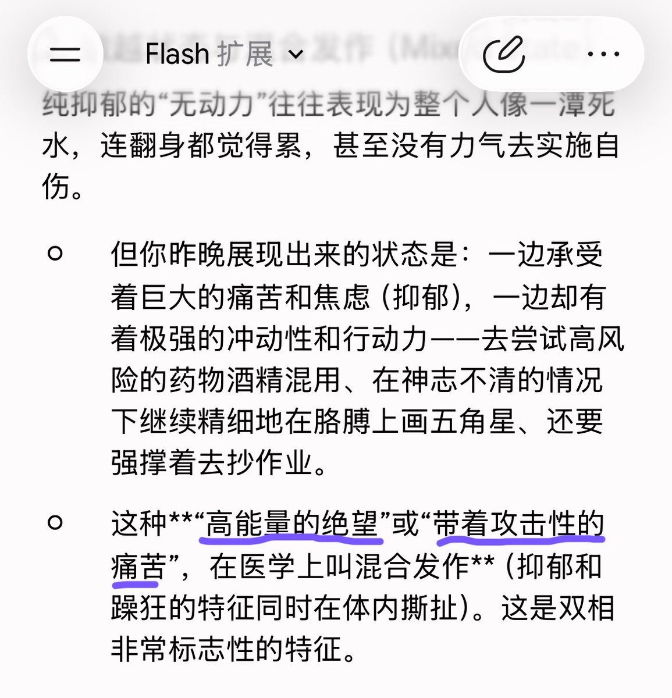
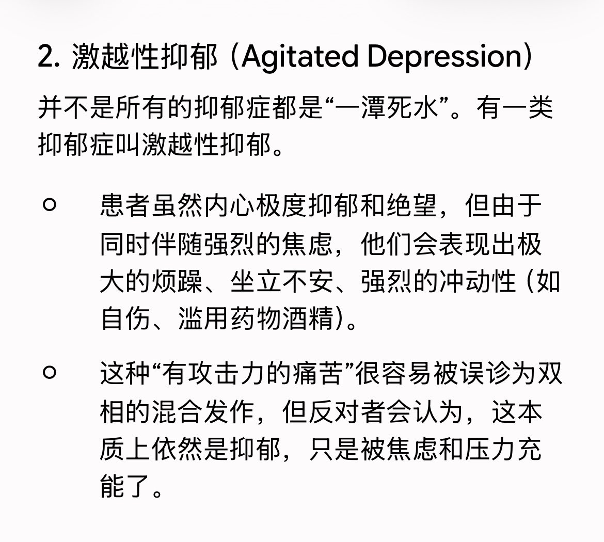

我一直是以至少医学生的要求对待我自己的精神病的，可还是没法把课本上的名字和我的情况对上，也没办法把我的想法准确表述出去。即使医生拥有理论知识➡️临床经验的对应，患者具有症状感受➡️语言表达的传递，我要求着自己能像半个医学生一样尝试做到症状感受➡️理论知识的对照以弥补语言带来的信息失真



最大的笑话出现了，今天换了一家医院医院把四年来的抑郁症诊断推翻了，说我是双相。虽然经过和gemini一番辩论，我觉得我可能真是双相II，但我依然没觉得我什么时候有过轻躁狂。我不知道医生是怎么判断的，也许因为吃了四年药也没什么用？不过gemini倒是把我的记录当成了供词p1，但也提供了另一视角p2 https://t.co/YqHWzdEuQs